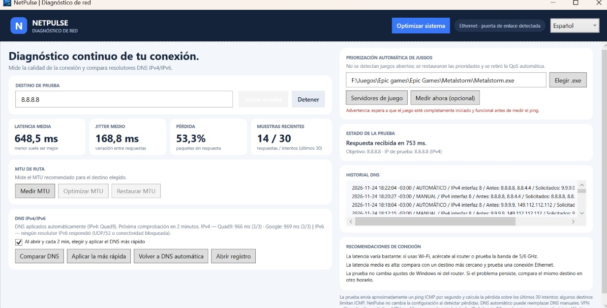
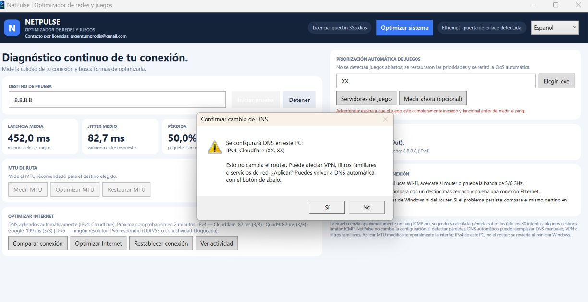
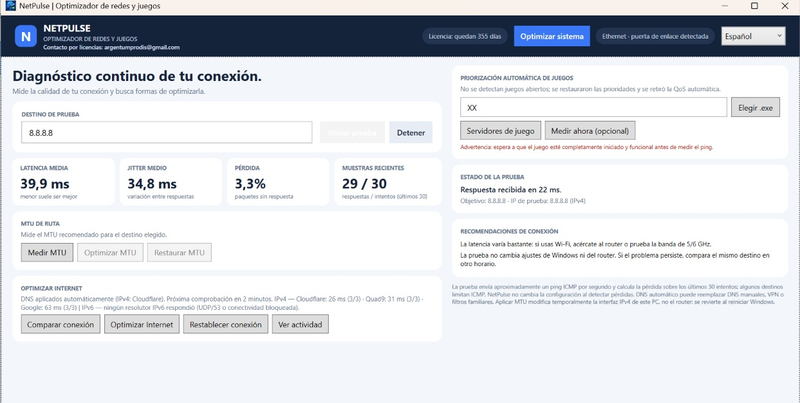

01 / DIAGNÓSTICO
¿El juego se traba?
Medí latencia, jitter y pérdida de paquetes para observar cómo responde la conexión a un destino.
Ver el diagnóstico →El lag puede venir de la pérdida de paquetes, el jitter, el Wi‑Fi o las descargas en segundo plano. NetPulse mide tu conexión para que sepas qué está pasando.
NetPulse te ayuda a medir y entender tu red antes de cambiar ajustes a ciegas.
Medí latencia, jitter y pérdida de paquetes para observar cómo responde la conexión a un destino.
Ver el diagnóstico →Revisá DNS y usá las herramientas de priorización de juegos disponibles en Windows.
Explorar herramientas →Separá señales de tu red, del equipo y del destino para decidir qué conviene revisar.
Pedir soporte →Elegí un destino y observá latencia, jitter y pérdida durante la prueba.
Probá resolutores DNS y revisá las recomendaciones para tu conexión.
Confirmá los cambios que quieras probar y volvé a medir. Los resultados dependen de tu red y del destino.



Las capturas muestran mediciones puntuales a 8.8.8.8. El ping a ese destino no representa necesariamente el ping dentro de un juego, y una comparación antes/después no garantiza que DNS haya causado el cambio. Los resultados varían según la red, el equipo, el destino y el momento.
Mirá el video y descubrí las herramientas de diagnóstico y optimización de NetPulse.
Ver en YouTube ↗Descargá NetPulse para Windows y probalo gratis durante 7 días.
Descargar NetPulse ↓Windows · Prueba de 7 días · Soporte en español